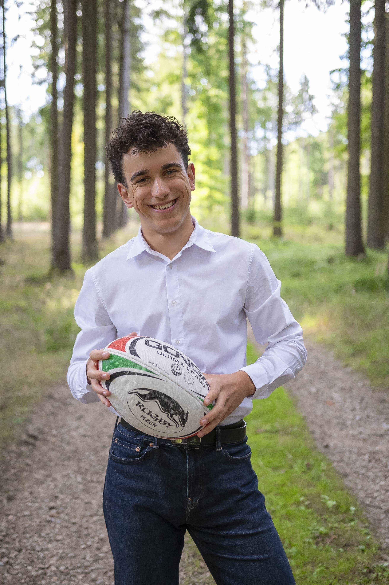

Ahoj, jsem Ben.
Student financí a AI na Tetr College of Business, trenér ragby a vytrvalostní sportovec z Česka. Učím se praxí: výměnné pobyty na třech kontinentech, jedenáct let ragby a zatím čtyři jazyky.

- Nové Dillí 2026
- IB Diploma 2026
- 11 let ragby
- 4 jazyky
- Výměna v Ohiu
- Triatlonista
Právě teď
Studuji na Tetr College of Business
Po dokončení IB Diploma v létě 2026 jsem byl přijat na Tetr College of Business, mezinárodní bakalářský program, během kterého studenti studují v několika zemích. Studuji finance a AI a momentálně jsem v Novém Dillí v Indii.
Co jsem zatím zvládl
Vše v sekci Růst a vzdělávání- Vzdělání
Tetr College of Business
Přijetí na Tetr College of Business – mezinárodní bakalářský program, během kterého studenti studují v několika zemích. Studuji finance a AI, momentálně v Novém Dillí v Indii.
- Vzdělání
IB Diploma – Gymnázium a SOŠ Rokycany
V létě 2026 jsem úspěšně dokončil program International Baccalaureate Diploma se zaměřením na biologii, matematiku, dějepis a angličtinu.
- Výměnný pobyt
Semestr v Ohiu, USA
Půl roku jsem strávil na americké střední škole, ponořený do americké kultury a úplně jiného školního systému. Později jsem se vrátil za přáteli a na ples (prom).
- Sport
Ragby
Jedenáct let ragby, včetně působení v jednom z nejlepších českých klubů – týmová spolupráce, odolnost, strategické myšlení a vůdčí návyky.
- Sport
Trénování mládeže v ragby
V letech 2022–2026 jsem dobrovolně trénoval mladé hráče – vedl jsem je nejen v ragby, ale i k disciplíně, zodpovědnosti a týmové spolupráci.
- Sport
Triatlon
Dokončil jsem svůj první triatlon a teď trénuji plavání, kolo a běh s cílem zvládnout Ironman 70.3.
- Jazyky
Jazyky
Čeština (rodilý mluvčí), angličtina (plynně od dětství), němčina a portugalština (středně pokročilý), momentálně se učím norsky. Už od malička jsem pomáhal zahraničním návštěvníkům s komunikací, díky čemuž se cítím jistě v mezikulturním prostředí.
- Stáž
Stáž v armádě
Cenné dovednosti a nový pohled na věc díky stáži u armády.